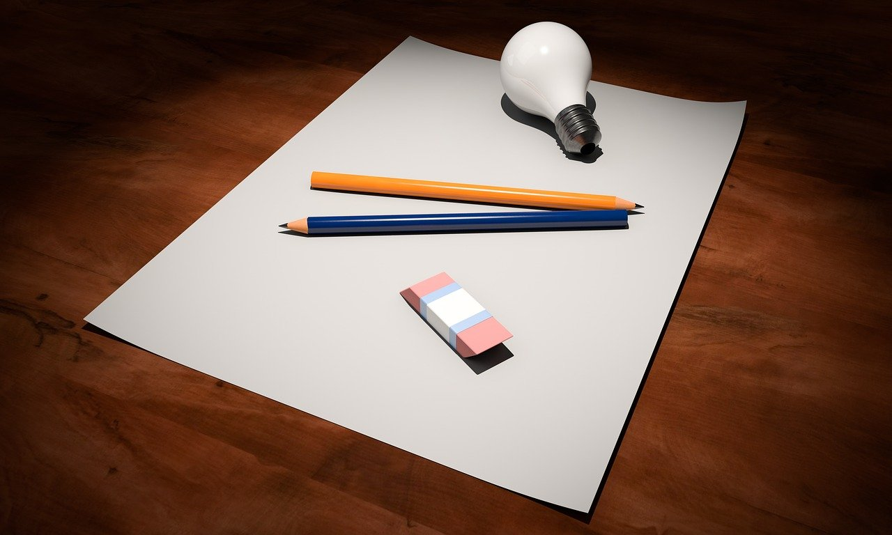

My Web Development Journey
On this page I intend to track my web development journey from zero to hero ... I hope!
I want to record and share when and why I started this process, how I'm going about learning web development, my thoughts, struggles, victories, and hopefully share some insight into what web development is all about to those who don't know. I hope that one day I can look back on these blogs, this journey, and be proud of the progress I have achieved since I began.
| The first two months of progress | |
|---|---|
|
Date: 28/07/21
So more or less I've been in this business of web development and coding/programming for about three months now. What do I have to show for it? Well, I have this website for one. But also I have been keeping track of the journey so far via photos and videos and making copious notes. What you see here is the progress I made within the first two months of learning web development (from the beginning of May to the end of June). After that (during July) I've been working solely on this website. I want to share these things with you so that you, as well as I, can see how I am progressing as time goes on. Maybe this will serve as a reference for other people who are looking to learn coding and give them an idea of how long it takes or what's involved. Maybe some people may just find it interesting. Whatever the case, here is a visual journey of my progress so far... Continue here... |
|
| How I became interested in web development | |
|---|---|
|  |
Date: 25/07/21
This is the story of how and why I began getting into coding, programming, and web development. It all started back on 27th May (2022). I hadn't talked to Pedro (or 'Petras' as he's officially called) for years. We met way back at the University of Manchester in 2013. We were both studying the same course there, Social Anthropology. We became good friends there, however, just before the course's end in 2016, Pedro dropped out to pursue a career in technology. Pedro had always been into technology and he even tried making his own app while at University but at the time I wasn't really into all that stuff nor did I understand it very well. Just after the course ended in 2016 Pedro returned to Lithuania, where he's from, and then went on to live abroad in Australia for a few years. As a result we lost contact. I sent him messages every now and again and would get the occasional reply, or I would hear about him through friends, but that was it. I presumed I was to never know of him again. Continue here... |